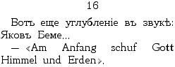
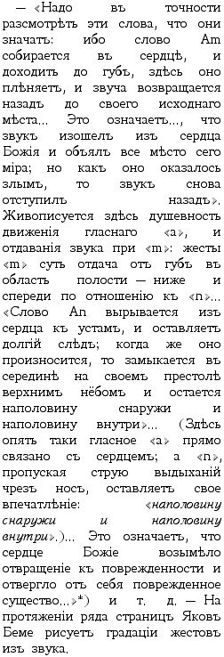
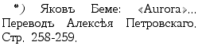

Glossolalia (Section 16)

Here is another delving into sound: Jacob Boehme. . .

"You have to look precisely at these words, what they signify; because the word Am collects itself in the heart, and approaches the lips, here it is captured, and soundingly returns back to its point of departure . . . This signifies . . . , that the sound departed from the heart of God and embraced the whole space of this world; but as soon as it turned out to be evil, then the sound again retreated back." Here is vividly depicted the soulness/soulful (spiritual) quality of the movement of the vowel "a," and the giving up of the sound with "m": the gestures of "m" are a giving forth from the lips into the realm of the orifice -- lower and more forward in relationship to the "n" . . . " The word An explodes from the heart to the lips, and leaves a long trace; when it is pronounced, then it closes the circle in the center on its throne by means of the upper palate and remains half on the outside and half on the inside"... (Here once again the vowel "a" is directly connected with the heart; and the "n" permitting a stream of exhalation through the nose, leaves behind its own impression: "half on the outside and half on the inside".)... This signifies, that the heart of God conceived an aversion to the damaged and turned away from itself the damaged being... "* etc. -- In the course of several pages Yakov Boehme depicts gradations of gestures of sound.

*Yakov Boehme, Aurora. Translation of Aleksei Petrovsky (pp. 258-259).